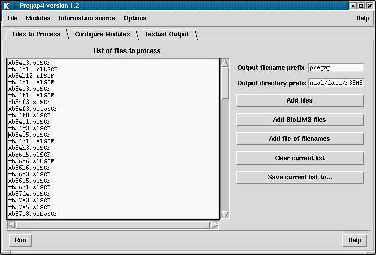

Pregap4 needs to be given a list of files to process. These files can be binary trace files (in ABI, ALF, SCF, CTF or ZTR format), Experiment Files, FASTA, or plain text. The files to process do not need to all be in the same format. FASTA files will be converted to Experiment files.

Refering to the figure above,
the "Files to Process" dialogue can be brought up from the File menu, or just
by pressing the appropriate tab when in compact_win mode.
On the left hand side we have the current list of files to process. This list can be edited simply by clicking with the mouse and typing as normal. This only edits Pregap4's temporary copy of this list and does not modify the contents of any file of filenames that the list was obtained from.
On the right side of the panel is the pregap4 output filename prefix, the output directory name, and several buttons. The filename prefix is used when Pregap4 needs to create files for its own use, both for temporary and not so temporary files. For example after processing there may be prefix.passed, prefix.failed files. The prefix defaults to `pregap' until a file of filenames is loaded, in which case it switches to the last used file of filenames. All files will be created within the output directory, regardless of where the input files reside. The output directory defaults to the current directory or to the last used input directory.
The buttons allow selection of the files to process. The "Add files" button will bring up a file browser, which will allow one or more file to be selected. Pressing Ok on the file browser will then add the selected files to the "List of files to process" panel on the left side of the pregap4 window. The "Add file of filenames" button may be used to select a list of files whose filenames have been written to a `file of filenames'. The list of files to process may be edited within pregap4, allowing new filenames to be added or removed. The "Clear current list" will remove all filenames from the list. Both the "Add files" and "Add file of filenames" button append their selections to the list of files to process, so to replace the current list the "Clear current list" button must first be used. Finally the "Save current list to..." button may be used to produce a new file of filenames, containing the combined list of files to process.